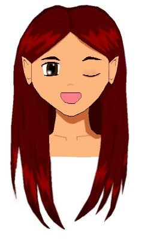
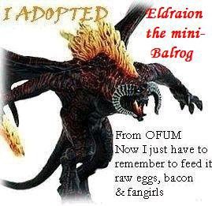

[spinoff]
by [authors]
[number]. Agent Luthy
Name: Luthy
Height: 5'7 1/2" (That 1/2" is important!!! :P)
Hair color: Naturally brown, dyed red
Weight: *whistles* Average...
Eyes: chestnut brown
Appearance: Luthy is pretty enough, though by no means exceptional. She wears her long red hair always down. On her left hand she has a silver ring set with gold leaves and on the right hand a replica of the Ring of Barahir.

Luthy is the proud mommy of Eldraion the mini-balrog!

To be updated later :D